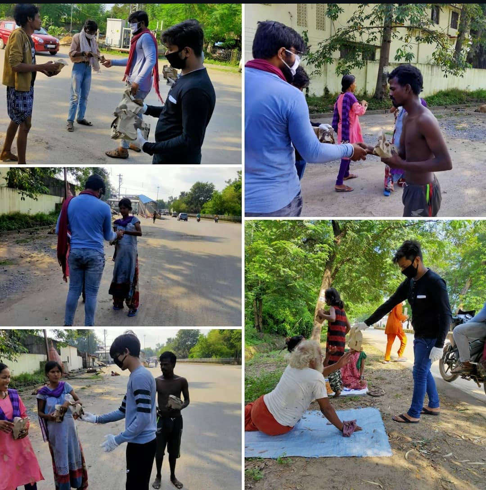
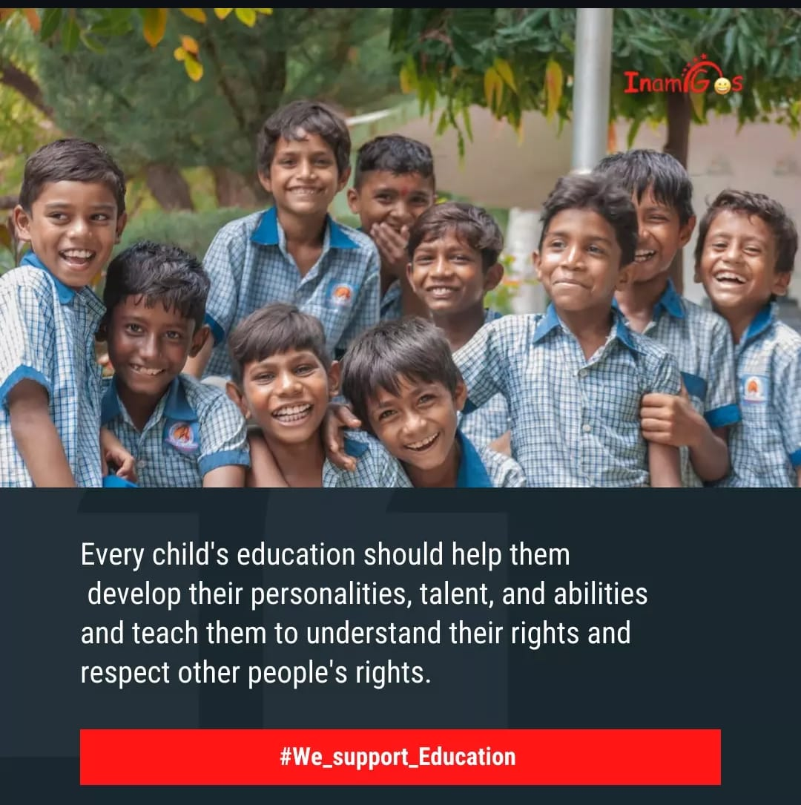
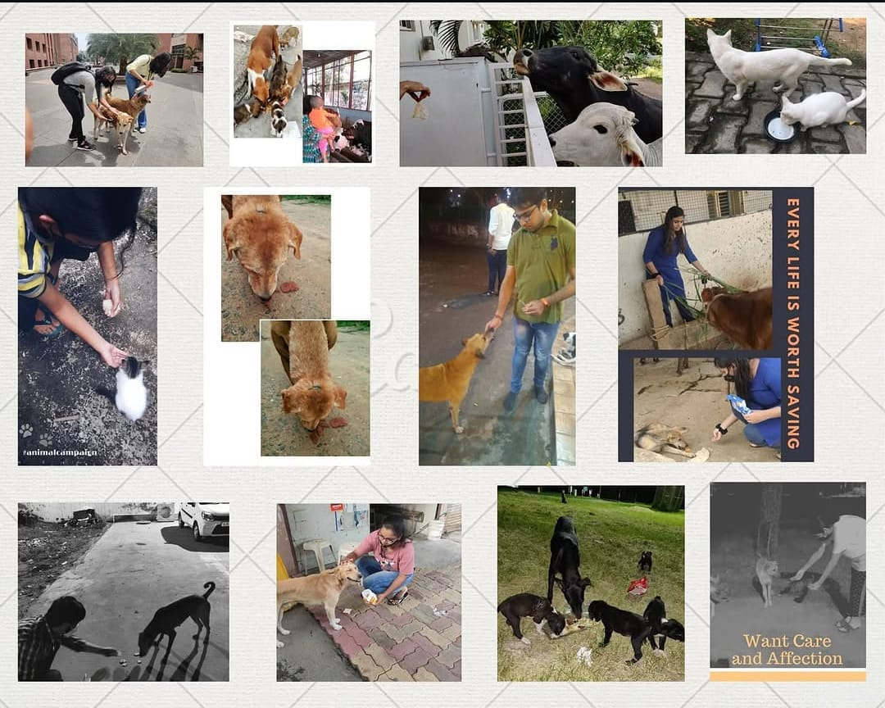
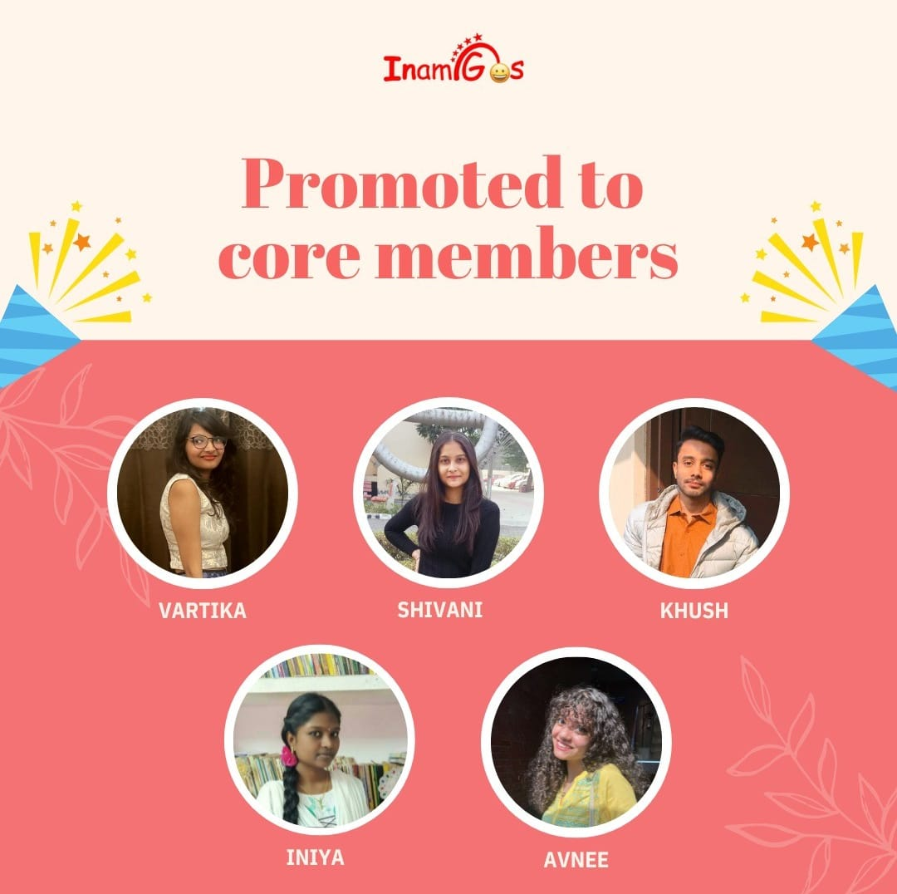

Our Ongoing Projects

Project Seva
Provides food, clothes and basic support to people in need.

Project Bachpanshala
Supports education for underprivileged children and encourages learning.

Project Jeev
Focuses on animal welfare, care and awareness about kindness towards animals.

Project udana
Empowers women through awareness, support and opportunities.

Project Prakriti
Promotes environmental protection, sustainability and cleanliness.

Project Vikas
Encourages skill development and career growth for youth.